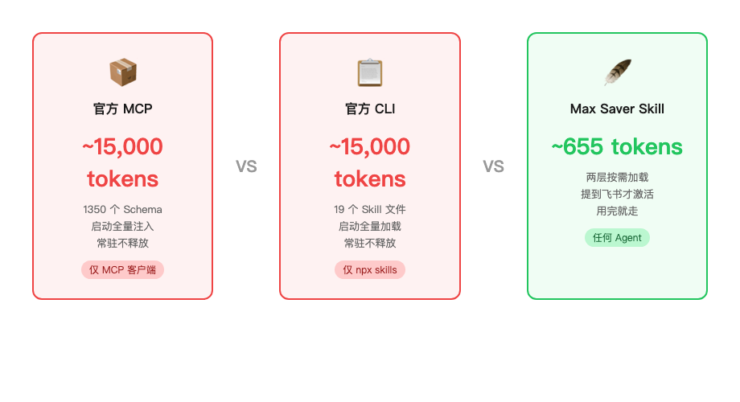
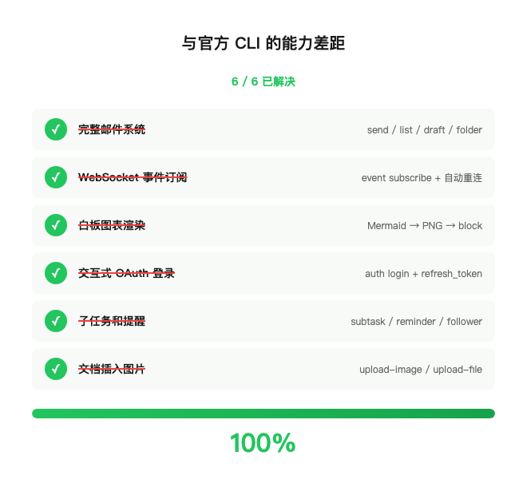
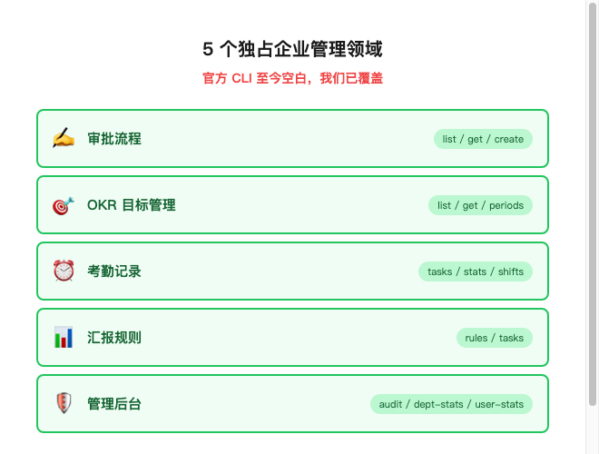

| 方案 | 上下文成本 | 能用的 Agent | 加载方式 |
|---|---|---|---|
| 飞书官方 MCP（1350+ 工具） | 🔴 ~15,000+ tokens | 仅 MCP 客户端 | 启动全量加载 |
| 飞书官方 CLI（19 个 Skill 文件） | 🔴 ~15,000+ tokens | 仅 npx skills 框架 | 启动全量加载 |
| Feishu Max Saver Skill | 🟢 ~655 tokens | 任何 Agent | 按需触发 |

references/commands.md，Agent 需要具体参数时才读。feishu doc search 就知道怎么搜文档，不需要先把全部命令参数背一遍。feishu <命令>。没有 Schema 预加载，没有工具列表注入。打个比方：MCP 是背着 1350 件套工具箱出门，CLI 是揣一本口袋手册。| 差距 | 怎么补的 |
|---|---|
| 邮件收发 | 加了 10 个邮件命令（send/list/draft/folder），--as user 用户身份 |
| WebSocket 事件订阅 | feishu event subscribe——长连接 NDJSON 事件流，自动重连 |
| 白板图表渲染 | Mermaid → PNG → upload-image → block create，按需装 mermaid-cli |
| OAuth 登录 | feishu auth login 浏览器授权 + refresh_token 自动续期，Agent 无感知 |
| 子任务和提醒 | create-subtask / list-subtasks / --reminder / add-follower |
| 文档插入图片 | upload-image / upload-file，multipart 上传拿 file_token |


feishu event subscribe，后台跑着，有事件就读 stdout。审批状态变了、有人 @机器人了、文档被编辑了——实时知道。skill/ 目录 symlink 到你的 Agent 的 Skill 路径，或者直接把 SKILL.md 喂进系统提示。im send 发一遍消息（那样你会收到两条），而是直接在对话流里回复。这种边界感是真用过才会加的。